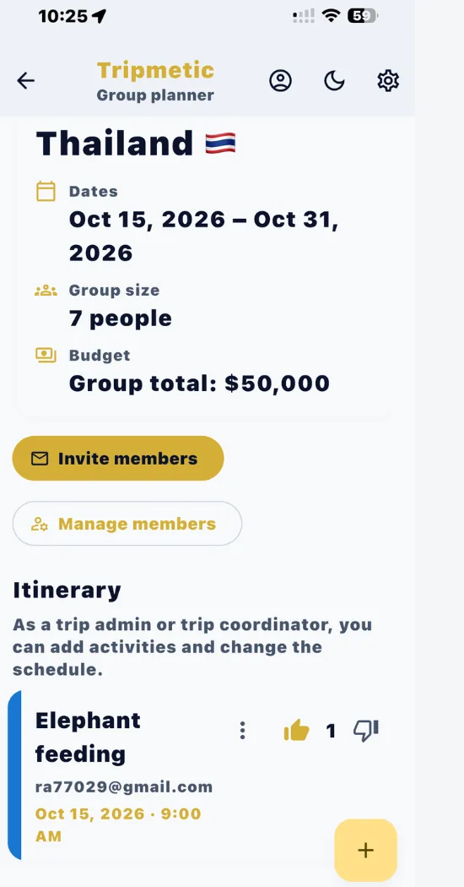
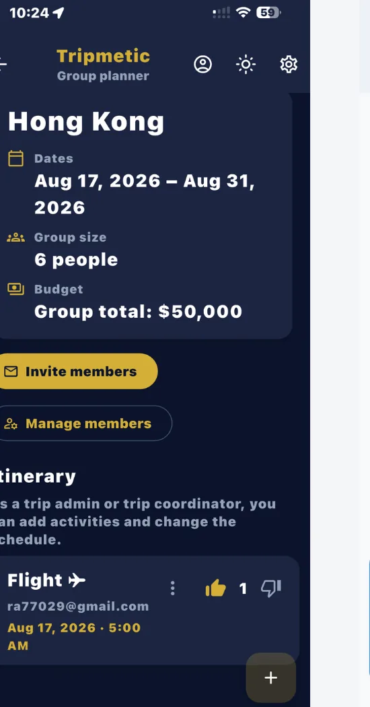

Organizing a vacation with friends or coordinating logistics for multiple colleagues used to mean endless, confusing chat threads. We built Tripmetic as a premium real-time group travel planner to solve exactly that.
Whether you are planning a family vacation or engaged in complex remote team retreat planning, the new Group Planner acts as your central hub. Here is how to get your team onboarded and synchronized.
1 Plan or Join a Trip
When you open the Group Planner, you will be greeted by the central hub. You can choose to Plan a Group Trip by setting the destination, dates, and group size, or you can Join a Group Trip by pasting an invite code sent by a friend.

2 Invite Members & Set Roles
As the Trip Owner, you can easily send email invitations directly from the app. Because this is a secure collaborative trip itinerary app, you retain full control over permissions. You can assign your members specific roles:
- Admin: Can add members, edit the budget, and delete activities.
- Co-planner: Can propose activities, vote, and add notes.
- View-Only: Can see the itinerary in real-time, but cannot make edits.

3 Build & Vote on Activities
This is where the magic happens. Any Co-planner or Admin can add an activity (like a dinner reservation or a museum tour) to the live feed. You can include private notes and hyperlinks. To instantly see who planned what, every activity is uniquely color-coded to the member who proposed it.
Instead of arguing in a group chat, members simply use the thumbs up and thumbs down icons to vote on travel activities directly on the card. The itinerary updates instantly for everyone.
4 Manage the Group Budget
Money is often the hardest part of group travel. Tripmetic includes an integrated shared vacation budget tracker right inside the planner. Admins can toggle the financial settings to track a "Per Person" budget or a total "Group Budget," ensuring everyone stays aligned on spending before the trip even begins.
Frequently Asked Questions
Admins have full control over the trip and budget. Co-planners can add activities, links, and vote, but cannot remove members. View-only members can see the itinerary update dynamically, but cannot make changes.
Yes. In order to participate in real-time syncing, view the secure notes, and cast their votes, all invited members must download the free Tripmetic app and create an account to authenticate their identity.
While your primary Bucket List and offline map regions work entirely without internet, the Group Planner relies on a live cloud database to sync votes and activities with your friends in real-time. You will need a Wi-Fi or cellular connection to see the latest updates from your team.